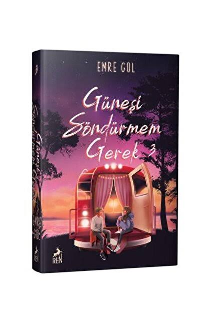

Yıldızların büyüsüne kapılan gece, güneşe ihanet etti. Güneş söndüğünde ise gece kazandığını sandı. Oysaki güneş olmadan yıldızlar bir hiçti.
Yaşadığı son yıkımla zor günler geçiren Umut’un yeniden başlayabilmesi için ya Kerem’i affedip hayatına devam etmesi ya da aşkını kaybetmek pahasına gerçeğin peşine düşmesi gerekmektedir ve bu hiç de düşündüğü kadar kolay olmayacaktır.
Bir yanda büyük aşkı Kerem, diğer yanda vazgeçemediği doğruları vardır. Umut için yeni bir yol ayrımı vakti gelmiştir.
Umut ya güneşini söndürecek ya da güneşinin sonsuza dek yanmasına izin verecektir.
Gökyüzü… Güneş… Yıldızlar…
Orada her kim varsa ve şu anımıza şahitlik ediyorsa görsün ve bilsin ki…
Kerem ve Umut’un aşkı gerçekti.